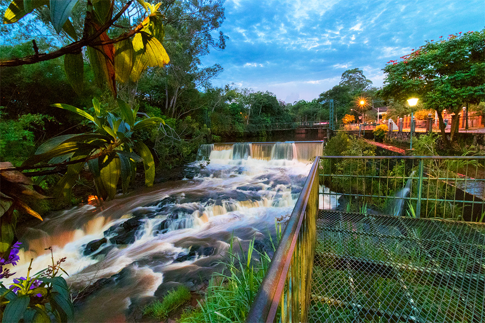
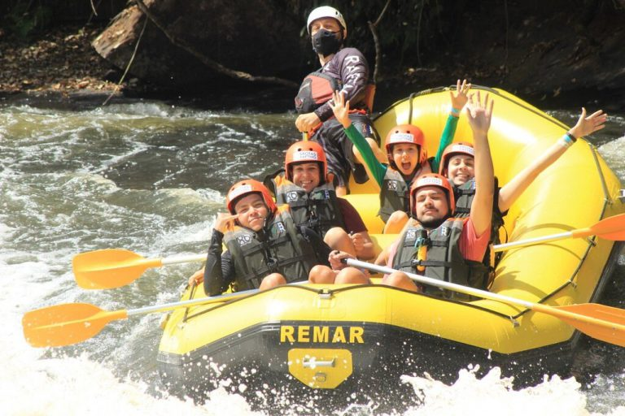
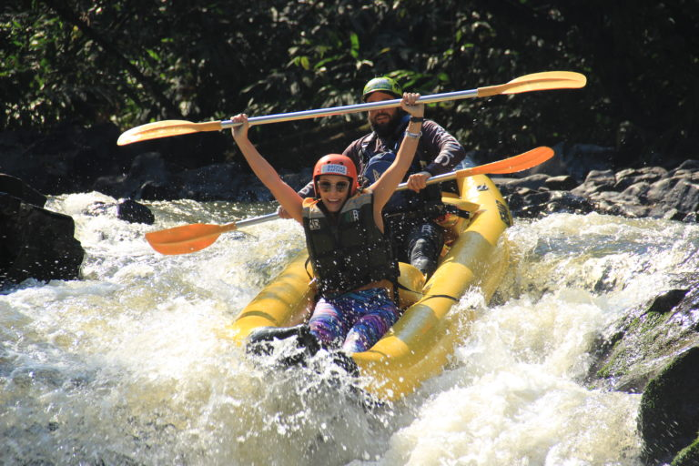
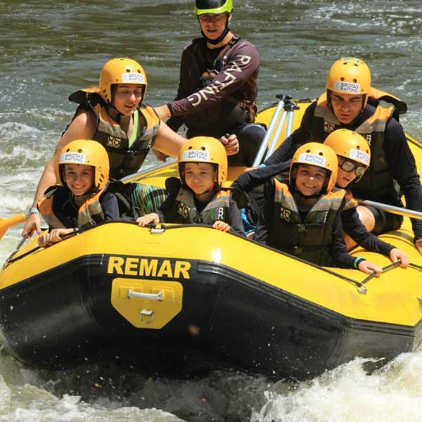
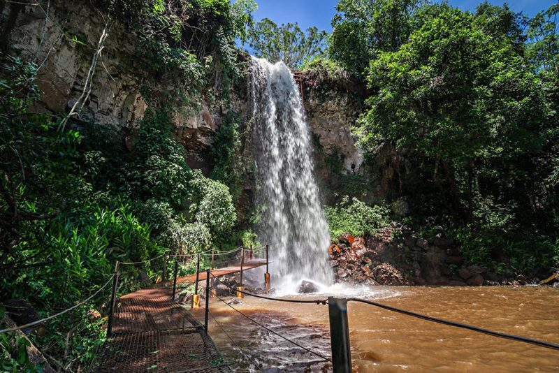
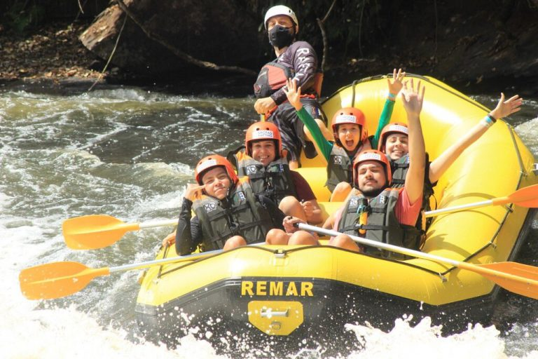
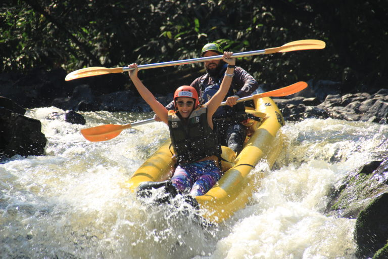
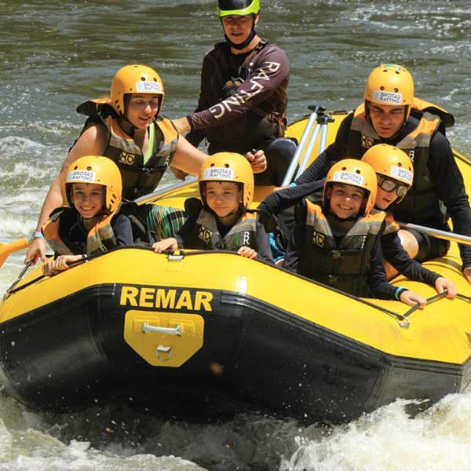
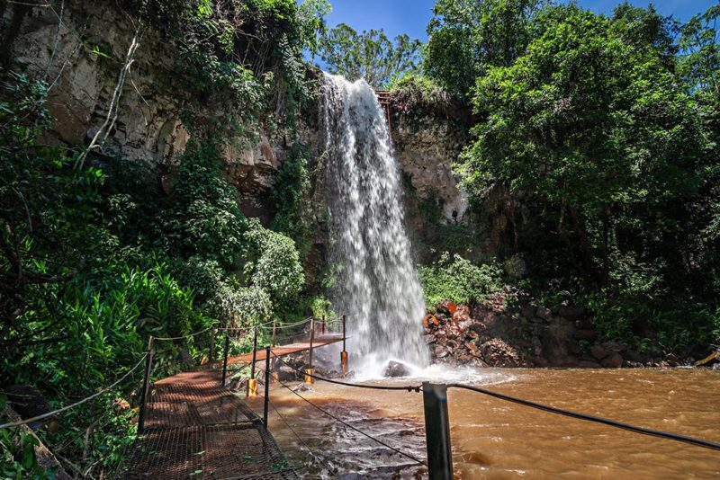

Navigate the wild thrills of the waters and go down the rapids with us! Who are we? Rafting Brotas has been running clean rivers and tributaries since 1990. What else is there besides rafting? We have trails and waterfalls to enjoy. Who will lead us? We have professionals monitoring the route and ensuring your safety during the day's adventures.

RapidFlow Rafting Brotas City
History
The history of rafting in Brotas dates back to the late 1980s and early 1990s. The city stood out as a destination for ecotourism and adventure, with rivers such as the Rio Jacaré-Pepira offering ideal conditions for rafting. The first operators began offering guided tours, and today Brotas is known as the “Rafting Capital” of Brazil, attracting visitors from all over the country and abroad.
Adventure Awaits You
 






